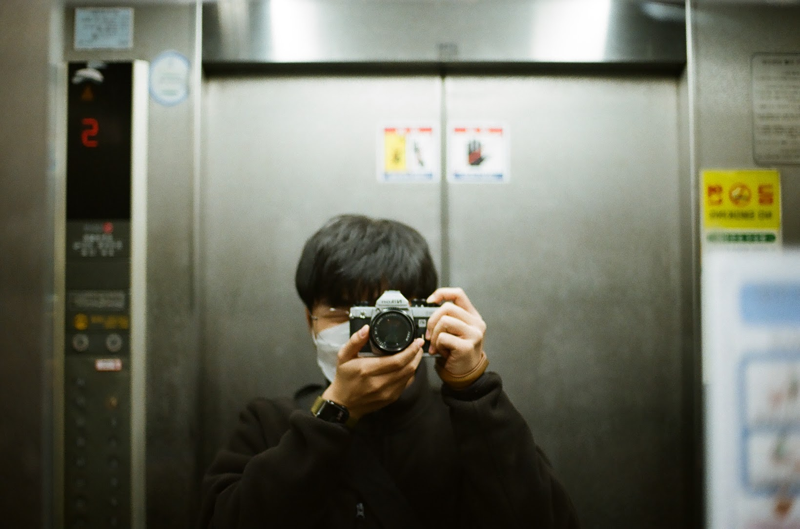

필름카메라를 왜 쓸까?

난 카메라를 만져본 적이 없었다. 어느 날 갑자기 필름 카메라를 사용해보고 싶었다. 근데 그냥 써보고 싶다고만 생각해서 딱히 찾아보지는 않았다. 주변에 취미로 카메라를 다루는 사람도 별로 없고 있더라도 다 디지털이었을 건데, 누가 필름 카메라를 쓸까? 싶었는데 그런 친구가 있었다. (정)동혁이는 니콘 FM2를 사용하고 있었다. 멋지게도 동혁이의 할아버지가 쓰시던 카메라라고 한다.
이 카메라는 1982년 출시 때 렌즈 없이 225불에 팔렸다. 한국에서는 당연히 좀 더 비싸게 팔렸을 텐데, 당시 7급 공무원의 평균 임금이 호봉에 따라 8만원 ~ 21만원 정도였다. 거의 2 ~ 3달 월급을 쏟아부어야 살 수 있던 카메라였다. 지금 월급을 털어 DSLR이나 미러리스를 사는 거와 비슷하다.
동혁이랑 얘기하다가 바빠서 이 카메라를 최근에 못 쓰고 있다고 했다. 아, 기회다 싶어 빌려줄 수 있는지 물어봤다. 빌려준다고 했다. 무려 두 달간! 그래서 작년 10월 30일에 카메라를 빌렸고, 두 달간 사용하면서 왜 필름카메라를 쓰는지 알 듯했다.
기계적 감각#
필름 카메라로 사진을 찍는 과정은 단순하다. 초점을 맞추고, 찍고 싶은 심도에 맞게 조리개를 설정하고, 노출계가 말하는 대로 셔터 속도 다이얼을 돌려 빛이 필름에 노출할 시간을 결정한다. 그리곤 셔터 버튼을 누르고 레버를 젖혀 필름과 셔터를 장전한다. 이 하나하나의 과정이 손에 그대로 느껴진다. (물론 필름 카메라도 종류에 따라 좀 다르긴 하다.)
니콘 FM2는 완전 수동 카메라이다. 자동으로 초점을 맞춰주지도 않고, 자동으로 노출을 맞춰주지도 않는다. 첫 시작부터 그냥 사막에 던져졌다. 카메라를 받고 집에 와서 공부했다. 직접 만져보니 내가 카메라를 직접 조정하는 것 같다는 느낌이 들었다. 마치 요즈음에 디지털 카메라들이 최신 현/기 자동차라면 FM2는 1980년대 수동 포터를 모는 느낌이다. 그러나 포터는 몬생겼다.

필름 카메라를 조작하면서 가장 만족하는 순간은 바로 장전하는 순간이다. 레버를 넘길 때의 묵직함, 필름이 넘어가고 셔터가 올라가는 게 느껴진다. 어찌 보면 이 순간 때문에 필름 카메라를 계속 쓰는 것 같다.
느림의 미학#
필름 하나에 몇 장을 찍을 수 있을까? 36장이다. 필름 하나에 얼마일까? 2020년 기준으로 보통 만원이다. 그게 끝이 아니다. 필름 현상과 스캔도 필요하다. 4천원이 또 나간다. 대충 계산해보자면 한 장에 14000 / 36 = 388.888...원이다. 한장 한장이 돈이다. 그냥 막 찍을 수는 없다. 진짜 한번 찍는데 388원이라고 생각하면 찍으려고 하다가도 잠깐 다시 생각해보게 만든다. 이렇게 찍는 게, 이거 찍는 게 정말 좋을까?
결과물 확인#
당연하게도 찍은 사진을 바로바로 볼 수 없다. 셔터 버튼을 누르고 필름을 바로 펼쳐보면 사진이 찍힌 게 보이니깐 바로 열어보세요!

36장을 다 찍었다면, 필름을 감아 꺼내고 사진관에 현상을 맡겨야 한다. 현상 은 필름에 약품처리를 해 사진의 상이 나타나도록 하는 작업이다. 사진관에 현상을 맡기면 스캔을 함께 한다. 옛날에는 현상한 필름들을 인화해서 직접 사진첩에 끼웠겠지만, 지금은 그냥 스캔해 파일로 받는다. 만약 사진이 마음에 들어서 인화하려면 사진관에 파일을 전달하면 된다.
사진관에서 스캔한 사진들을 받아보면 보통은 실망한다. 내가 잘 찍었을 것 같던 사진들은 다들 초점이 나가 있거나, 빛을 너무 많이, 너무 적게 받았거나 그냥 그렇게 나온다. 그러다가 의외의 사진에서 한두 장을 건진다. 길 가다가 무심코 보인 가게를 찍었는데, 순간적으로 친구들이 웃는 순간을 찍었는데, 테스트로 샤워기 헤드를 찍었는데 너무 잘 나올 때가 있다. 물론 잘 찍었을 거 같은 사진이 잘 나오면 좋지만, 나는 그럴 때 더 재미를 느낀다.
나도 해볼래!#
우선, 안하는 걸 추천한다. 아무리 계산기 뚜드려봐도 디지털이 훨 경제적이다. 그래도 정 하고 싶다면, 중고거래를 하기 보다는 카메라 샵을 찾아가자. 필름 카메라들은 워낙 오래됐기에, 상태를 제대로 살펴야한다. 그러기에는 입문자들에게는 힘든게 당연하다. 그리고 쓰다가 잘못되면 보증기간 내로 해서 고쳐준다.
앞으로의 내 필름 생활#
FM2로 필름 카메라를 시작한 이후 심각한 기추병에 시달리고 있다. 아직 사진도 잘 못찍는데, 기기만 많이 써보고 싶어한다. Nikon FM2(보냄), Nikon F801(보냄), Nikon F90X(현역), Nikon FM(현역), Yashica FX-D(가지고있으나 안씀)을 그 4개월(2020/11 ~ 2021/02) 간에 사용해봤다.
올해 안으로 중형 필름 카메라도 시작해보고자 한다. 중형은 더 악질이다. 한롤에 12장 밖에 못찍는다. 그러나 디카 센서 크기는 행복 순인 것 처럼, 필카도 판형이 사기다.
필름은 20만원 들여서 해외직구로 36롤을 장만해놨다. 앞으로 필름 걱정은 좀 덜었다. (중형 카메라를 안 산다면)